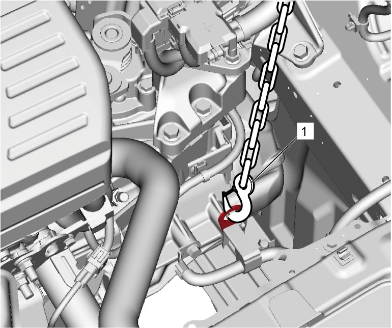
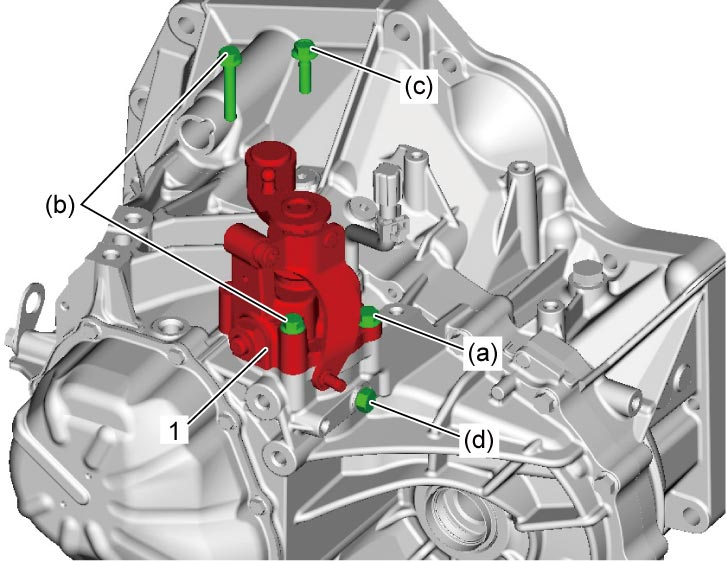

5B
| Gear Shift and Select Shaft Assembly Removal and Installation |
Removal
1)Remove battery and battery tray. 
2)Remove air cleaner suction hose and suction pipe.
3)Support transaxle using chain hoist (1) or engine crane.


 "Expand image")
4)Remove engine left mounting No.1 bracket and No.2 bracket.
5)Disconnect gear shift and gear select control cables from transaxle.
6)Disconnect neutral position switch connector, if equipped.
7)Remove gear shift interlock bolt (1) from transaxle case.
8)Remove gear shift guide case bolts (2) and gear shift & select shaft assembly (3).

 "Expand image")
Installation
NOTICE:
The fastener is pre-coated with friction stabilizer. If the fastener is reused, it may work loose.
Replace the fastener pre-coated with friction stabilizer with a new one.
1)Install gear shift & select shaft assembly in the following procedure.
a)Install new gasket and gear shift & select shaft assembly (1).
b)Tighten gear shift guide case No.1, No.2 and No.3 bolts by hand.
c)Tighten gear shift guide case No.1 bolt to specified torque.
2)Install washer and gear shift interlock bolt, and then tighten it to specified torque.

 "Expand image")
3)Connect neutral position switch connector, if equipped.
4)Connect gear shift and gear select control cables to transaxle.
5)Install engine left mounting No.1 bracket and No.2 bracket.
6)Remove chain hoist from transaxle.
7)Install air cleaner suction hose and suction pipe.
8)Install battery and battery tray.